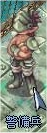
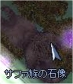
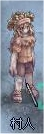
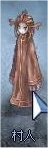
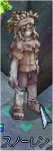
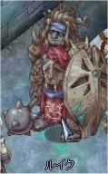
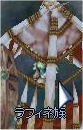

画像にリンクがはってあるものは、クリックすると別窓で大きめサイズが表示されます。
[アーク]
所在地；前線基地スプレンディッド建物（228,162）内 |
  |
[サファ族の石像]
所在地；イグドラシルの中心部01北西（58,223） |
|  |
[村人ラウィネ]
所在地；マヌク中央（278,177）付近 |
  |
[村人リビエル]
所在地；マヌク中央（278,177）付近 |
  |
[スノーレン]
所在地；マヌク5時方向建物（253,110）地下奥 |
|  |
[ルイク]
所在地；マヌク5時方向建物（253,110）地下奥 |
  |
[怪我をしたラフィネ族]
所在地；マヌク5時方向建物（253,110）地下奥 |
|  |
[テラ]
所在地；前線基地スプレンディッド建物（285,139）内 |
back
(c) Gravity Co., Ltd. & Lee MyoungJin(studio DTDS). All rights reserved.
(c) GungHo Online Entertainment, Inc. All Rights Reserved.
当コンテンツの再利用（再転載・配布など）は、禁止しています。